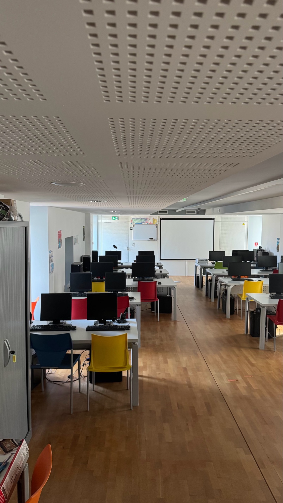
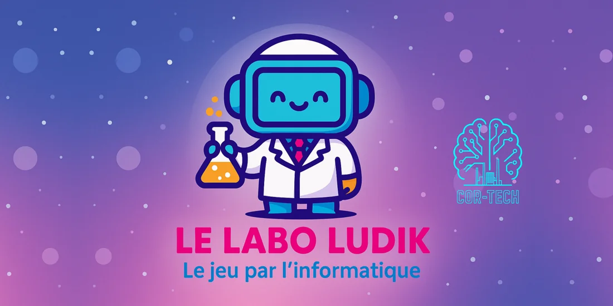

16OCT
Atelier IA niveau 1
Comprendre l’IA et choisir le modèle adapté à son besoin · Gemini (version gratuite)
20h30–22h00
COR-TECH, bâtiment de la médiathèque de Cordemais
5 €Jauge : 10 pers.
Ateliers, gaming, création numérique, robotique et découvertes : COR-TECH rassemble toutes les générations autour de la technologie.
PC, consoles et simulateur de conduite à Cordemais.
Tournois, free-to-play, expériences ludiques…
Des révisions qui donnent envie d’apprendre autrement.
Ateliers, révisions ludiques, initiation à la tech…
Le Labo du vendredi, robotique et projets en équipe…
Devenir bénévole, accompagner, transmettre…

PC, Nintendo Switch, Wii, Xbox One, Xbox Series S et simulateur de conduite : découvrez l’espace où l’on se retrouve pour jouer et explorer.
Découvrir l’accès au club et ses horaires →Rejoignez-nous pour nos prochaines activités !
Comprendre l’IA et choisir le modèle adapté à son besoin · Gemini (version gratuite)
20h30–22h00
COR-TECH, bâtiment de la médiathèque de Cordemais
20h30–22h30
14h00–18h00
Optimisation des prompts et création de petites applications · Gemini (version gratuite)
20h30–22h00
Des expériences créées chez COR-TECH
Pas besoin d’être développeur ou ingénieur. Vous pouvez animer des jeux vidéo, accompagner la découverte du numérique ou aider l’association à communiquer et à trouver des partenaires.
Voir nos missionsAnnonces et candidatures sur JeVeuxAider.gouv.fr

Deux heures par semaine pour imaginer et fabriquer ensemble. Premier défi proposé : construire un BallBot, puis le faire évoluer à notre sauce.
Un projet collectif de robotique ouvert aux adultes curieux.
Lire la suite →
Découvrez les projets réalisés au Labo par les enfants.
Lire la suite →